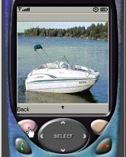

| | | | Contents: | | |
| | Related content: | | |
| | Subscriptions: | | |
|
Subtitle
Author name (Author email address)
Author job title, Author company
09 Mar 2004
Updated 10 Mar 2004 Your article abstract goes here. Summarize the main points of the article or the task the developer will be able to do after reading the article. Put the primary points and key phrases close to the beginning of the abstract, because it may be truncated in search results. You may include HTML tagging or special characters, such as the trademark symbols for IBM® and Java™. Major heading
Introductory paragraph. Minor heading
Text following minor heading. Listing 1. Seven methods to create a connection
Connector (public class Connector)
public static Connection open(String name)
public static Connection open(String name)
public static Connection open(String name, int mode, boolean timeouts)
public static DataInputStream openDataInputStream(String name)
public static DataOutputStream openDataOutputStream(String name)
public static InputStream openInputStream(String name)
public static OutputStream openOutputStream(String name)
|
Here is a sentence that mentions a socket subroutine, socket_setup(), which returns a socket that is ready to accept connections. Figure 1. Sample display screen
 Table 1. Selected control point functions required of B2B gateways
| Management functions | Operational functions | - Partner profile management
- Partner agreement management
- Non-repudiation
- Reporting
| - Usage monitoring
- Security functions
- Flow control
|
Resources - Download the source code used in this article.
- The Linux Documentation Project is a repository of Linux documentation including documents about individual software, HOWTO documents, FAQs, and more.
- "Build a better GUI" (developerWorks, October 2001) discusses the use of Java layout managers for better overall GUI design.
- Practical UNIX & Internet Security (O'Reilly & Associates; 1996), by Garfinkel and Spafford, is an excellent reference on all aspects of system security from user management to drafting a security policy.
About the author
 Author bio goes here. Author bio goes here. |
| |